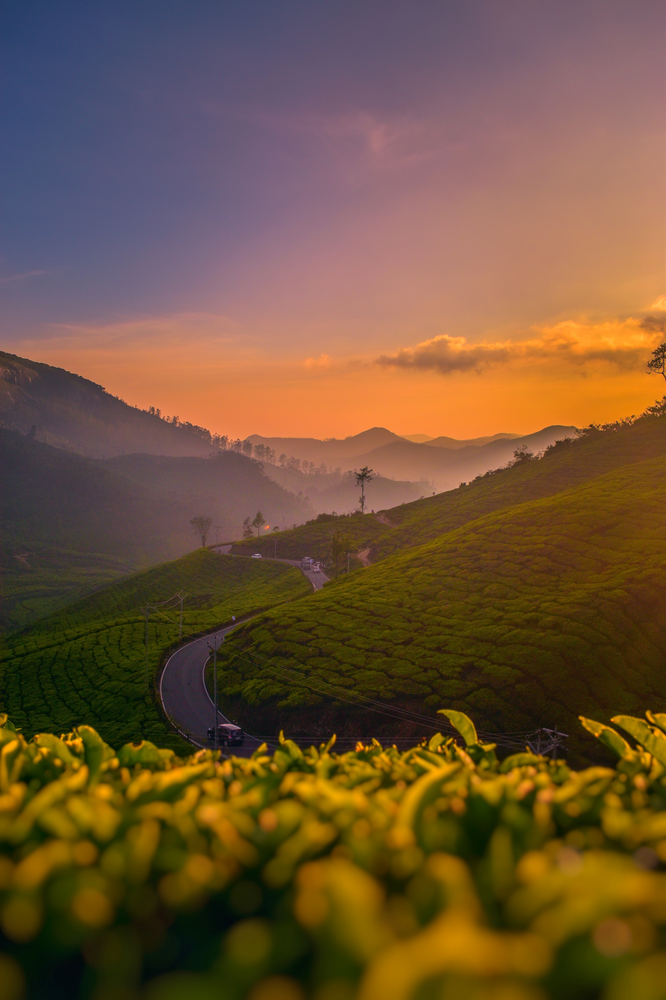

Kerala is a state on the Malabar Coast of India.It was formed on 1 November 1956, following the passage of the States Reorganisation Act, by combining Malayalam-speaking regions of the erstwhile regions of Cochin, Malabar, South Canara, and Travancore.Spread over 38,863 km2 (15,005 sq mi), Kerala is the twenty-first largest Indian state by area. It is bordered by Karnataka to the north and northeast, Tamil Nadu to the east and south, and the Lakshadweep Seato the west. With 33 million inhabitants as per the 2011 census, Kerala is the thirteenth-largest Indian state by population. It is divided into 14 districts with the capital being Thiruvananthapuram. Malayalam is the most widely spoken language and is also the official language of the state.Kerala has the lowest positive population growth rate in India, 3.44%; the highest Human Development Index (HDI), 0.784 in 2018 (0.712 in 2015); the highest literacy rate, 96.2% in the 2018 literacy survey conducted by the National Statistical Office, India;the highest life expectancy, 77 years; and the highest sex ratio, 1,084 women per 1,000 men. Kerala is the second-least impoverished state in India according to the Annual Report of Reserve Bank of India published in 2013.Kerala is the second-most urbanised major state in the country with 47.7% urban population according to the 2011 Census of India.The state topped in the country to achieve the Sustainable Development Goals according to the annual report of NITI Aayog published in 2019.The state has the highest media exposure in India with newspapers publishing in nine languages, mainly English and Malayalam. Hinduism is practised by more than half of the population, followed by Islam and Christianity. The culture is a synthesis of Aryan, Dravidian, Arab, and European cultures,developed over millennia, under influences from other parts of India and abroad
Kerala is a region of great natural beauty. In the eastern part of the state, Anai Peak (8,842 feet [2,695 metres]), the highest peak of peninsular India, crowns the Western Ghats. Descending from the rocky highlands westward toward the coastal plain is a stretch of farmlands, with different crops cultivated at different elevations. Along the coast, a linked chain of lagoons and backwaters form the so-called Venice of India. Among the more important rivers that flow to the Arabian Sea are the Ponnani (Bharatapuzha), Periyar, Chalakudi, and Pamba.
The climate of Kerala is equable and varies little from season to season. Throughout the year, daily temperatures usually rise from the low 70s F (low 20s C) into the 80s F (27 to 32 °C). The state is directly exposed to the southwest monsoon, which prevails from July through September, but it also receives rain from the reverse (northeast) monsoon, which blows in October and November. Precipitation averages about 115 inches (3,000 mm) annually statewide, with some slopes receiving more than 200 inches (5,000 mm).
Kerala lacks major reserves of fossil fuels. However, there are moderate deposits of ilmenite (the principal ore of titanium), rutile (titanium dioxide), and monazite (a mineral consisting of cerium and thorium phosphates), all of which are found in beach sands. Other minerals include limestone, iron ores, and bauxite (the principal ore of aluminum). The state is especially known for its high-quality kaolin (china clay), which is used to make porcelain. Kerala has great hydroelectric potential, with some two dozen hydroelectric stations operating within the state. Several thermal plants supply additional energy, and in the late 20th century the state began to establish wind farms. Despite its wealth of renewable resources for power generation, Kerala has continued to import some of its electricity from elsewhere in India.
Aside from agriculture, manufacturing and service activities are important contributors to Kerala’s economy. Traditional cottage industries, such as weaving, the production of coconut fibre, and cashew processing, employ many workers in the manufacturing sector. Of the medium- and large-scale industries, food processing is the principal employer. Other major manufactures include fertilizers, chemicals, electrical equipment, titanium, aluminum, plywood, ceramics, and synthetic fabrics. Banking, finance, and other components of the services sector also employ a significant segment of the state’s workforce. However, unemployment has remained acute, with the state’s high level of education among the jobless exacerbating the problem.
Kerala has well-developed road and railway systems. It is connected with the states of Tamil Nadu and Karnataka by national highways. A railway coming from the east through the Palghat Gap in the Western Ghats meets with a railway running from north to south through the state and on to Kanniyakumari, the southernmost town of India. There is a major port at Kochi and intermediate ports at Kozhikode, Alappuzha, and Neendakara (near Thiruvananthapuram); all handle coastal and foreign traffic. Kochi also has major shipyard and oil refining facilities and serves as a district headquarters for the Indian coast guard and as a regional headquarters for the navy. More than 1,000 miles (1,600 km) of inland waterways form the main arteries for carrying bulk freight to and from the ports. Thiruvananthapuram, Kozhikode, and Kochi have international airports.
The watery coastal zones of Kerala are interspersed with coconut palm groves, while much of the Western Ghats and riverine areas are covered with rainforests and monsoon forests (tropical deciduous forests). Rolling grasslands are typical of the upland region. This diverse natural environment is home to an extraordinary array of wildlife. Mammals include sambar deer, gaurs (wild cattle), Nilgiri tahrs (wild goatlike animals; Hemitragus hylocrius, or, by some classifications, Nilgiritragus hylocrius), elephants, leopards, tigers, bonnet monkeys, rare lion-tailed macaques (Macaca silenus), and Hanuman and Nilgiri langurs (Semnopithecus entellus and Trachypithecus johnii, respectively). King cobras (Ophiophagus hannah) are among the notable reptiles, while peacocks and hornbills are common birds. The state has several national parks and wildlife sanctuaries, among which the Periyar National Park and Tiger Reserve is the largest.
The economy of Kerala is the 8th-largest in India with ₹8.55 trillion (US$110 billion) in gross state domestic product (GSDP) and a per capita net state domestic product of ₹222,000 (US$2,900).he tertiary sector contributes around 65% to state's GSVA, while the primary sector contributes only 8%.The state has witnessed significant emigration, especially to the Arab states of the Persian Gulf during the Gulf Boom of the 1970s and early 1980s, and its economy depends significantly on remittances from a large Malayali expatriate community. The production of pepper and natural rubber contributes significantly to the total national output. In the agricultural sector, coconut, tea, coffee, cashew and spices are important. The state is situated between Arabian Sea to the west and Western Ghats mountain ranges to the east. The state's coastline extends for 595 kilometres (370 mi), and around 1.1 million people in the state are dependent on the fishery industry which contributes 3% to the state's income. Kerala is one of the prominent tourist destinations of India, with coconut-lined sandy beaches, backwaters, hill stations, Ayurvedic tourism and tropical greenery as its major attractions.
The state's 14 districts are distributed among six regions: North Malabar (far-north Kerala), South Malabar (north-central Kerala), Kochi (central Kerala), Northern Travancore, Central Travancore (southern Kerala) and Southern Travancore (far-south Kerala). The districts which serve as administrative regions for taxation purposes are further subdivided into 27 revenue subdivisions and 77 taluks, which have fiscal and administrative powers over settlements within their borders, including maintenance of local land records. Kerala's taluks are further sub-divided into 1,674 revenue villages.Since the 73rd and 74th amendments to the Constitution of India, the local government institutions function as the third tier of government, which constitutes 14 District Panchayats, 152 Block Panchayats, 941 Grama Panchayats, 87 Municipalities, six Municipal Corporations and one Township.Mahé, a part of the Indian union territory of Puducherry,though 647 kilometres (402 mi) away from it,is a coastal exclave surrounded by Kerala on all of its landward approaches. The Kannur District surrounds Mahé on three sides with the Kozhikode District on the fourth.
The structure of the government of Kerala, like that of most other states of India, is determined by the national constitution of 1950. Appointed by the president of India, the governor is the head of the state and functions on the advice of the chief minister, who is the head of the Council of Ministers. The state has an elected unicameral Legislative Assembly (Vidhan Sabha). The High Court in Ernakulam (near Kochi) is headed by a chief justice; appeals from the High Court may go to the Supreme Court of India. Below the High Court are district courts, subdivisional courts, munsifs’ (subordinate judicial officers’) courts, and munsif-magistrate courts. In addition, there are family courts and other courts that handle particular types of cases.At the local level, the state is divided into districts, which in turn are subdivided for revenue purposes into talukas (subdivisions) and villages. Since the mid-20th century, Kerala’s political experience has largely been one of instability, with a proliferation of political parties and coalition governments.
The state maintains a relatively high standard of health service. A comprehensive health insurance plan is available for workers in a number of professions, and free medical treatment is offered in many hospitals, health centres, and dispensaries. Among the top priorities of government health schemes have been the establishment of health care facilities in rural areas, the promotion of family planning, prevention of blindness, and control of communicable diseases such as leprosy, tuberculosis, and malaria.
Kerala has one of the most advanced educational systems and highest levels of literacy in India. Elementary education is compulsory between the ages of 6 and 14. There are primary, middle, and secondary schools, as well as polytechnical and industrial training institutes, arts and science colleges, and professional colleges. Kerala also has several universities, including the University of Kerala (1937) in Thiruvananthapuram, the University of Calicut (1968) in Kozhikode, Cochin University of Science and Technology (1971) in Kochi, and Kerala Agricultural University (1971) in Thrissur.
The cultural heritage of Kerala reflects extensive interaction with diverse communities from antiquity to the present. With an array of ancient Hindu temples with copper-clad roofs, later mosques with “Malabar gables” (triangular projections at the rooftops), and Baroque churches from the Portuguese colonial era, the state’s architecture offers a chronicle of the social, spiritual, and political history of the area. Other characteristically Keralan art forms include intricate paintings on wood, thematic murals, and a remarkable variety of indoor and outdoor lamps (from which the state has earned the sobriquet “Land of Lamps”).Literature and learning, in both Tamil and Sanskrit, have flourished since the 2nd century ce; meanwhile, the Malayalam language, though an offshoot of Tamil, has absorbed much from Sanskrit and also has a prolific literature. Notable names in Malayalam poetry are Tunchattu Eluttaccan and Kuncan Nampiyar among classical poets and Kumaran Asan and Vallathol in the 20th century. In 1889 Chandu Menon wrote Indulekha, the first outstanding novel in Malayalam, for which he received a certificate from Queen Victoria. Thakazhi Sivasankara Pillai, who produced hundreds of works before his death in 1999, has remained among the most widely read Malayali novelists. Most traditional dances of Kerala pertain to the great Indian epics—the Mahabharata and the Ramayana—or to the honouring of specific Hindu deities. In kathakali, the classical martial dance-drama of Kerala, male performers portray both male and female characters. By contrast, the bharata natyam dancing, dating to early Tamil times, is practiced exclusively by females.